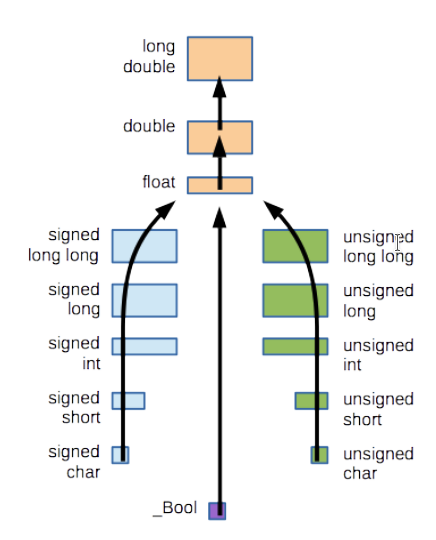

CSC 230: C & Software Tools
Table of Contents
Coding Style
We use Javadoc-style Doxygen comments.
We avoid magic numbers, instead using constants via preprocessor directives
(#define VALUE_NAME <VALUE>).
Indent with soft tabs (i.e. spaces). One statement per line. End all lines with
\n.
Avoid global variables because they're really unsafe and it's hard to track their modification.
Compilation
Java uses cross-platform bytecode that the JVM will use on runtime to produce and run machine code. The JVM either uses a bytecode interpreter or Just-In-Time (JIT) compilation. JIT is faster.
C directly generates machine code.
- Java
- Cross platform bytecode binaries.
- Can be easier to debug.
- C
- Produces faster code.
Steps
The parts are split into a frontend and backend. Frontends deal with the language specifics. Backends deal with the architecture specifics. The middle speaks a standard language.
This let's the hardest parts (optimization) be handled in a repeatable way for different languages and architectures.
- Frontend: preprocessing, lexical analysis, parsing, assembler.
- Backend: code generation, assembler.
Preprocessing
Goes in and processes all the preprocessor directives (lines that start with
#) in the source code.
There are a bunch of different kinds of preprocessor directives:
#define MACRO_NAME(ARGS) MACRO_VALUE: Defines a macro with the given name, which textually expands to the macro value, textually replacing the given arguments.#include <filename>: Copies the given filename in place of this. This first looks into the system directories and then looks in the current directory.#include "filename": Does the same thing as the above, but looks in the current directory first and then looks into the system directories.
Macros
C preprocessor macros are textual and unhygienic (meaning they can have name collisions). Because of this, you really should only use them for defining constants.
// Defining simple constants. Make sure you don't put simple constants!
#define SIZE 5
Macros do allow you to define multi-line functions. These functions are pass-by-name, where they have access to whatever names were present in the code at the time. (Make sure that you aren't using global variables here. Because of variable shadowing, this may not do what you expect.) Also, because of operator precedence, we should surround all variables in parentheses and the entire macro value in parentheses, if we're using multiple operators.
// Bad behavior!
#define TIMES_TWO(x) x * 2
TIMES_TWO(1 + 1); // results in 1 + 1 * 2 = 3, not (1 + 1) * 2 = 4, as we'd expect
// Better behavior
However, macros do allow for (very limited, very messy) generic programming.
// Generic Programming with Macros
// Relying on operators working with types
#define MAX(x, y) ((x) > (y) ? (x) : (y))
// Taking an explicit type
#define SWAP(x, y, type) { \
type tmp = x; \
x = y; \
y = tmp; \
}
You can also control macro expansion using
#x: Puts quotes around the valuexof the given argument. Useful for debugging sometimes.x ## y: Puts quotes around the valuexandy. Due to implicit string literal concatenation, these concatenate each other.
Include Guard
Lexical Analysis
Converts source code into tokens.
The C scanner / lexical analyzer is a maximal muncher. This means it goes as far as it can with its first guess whenever there is ambiguity.
Parsing
Converts the string of tokens into an Abstract Syntax Tree (AST).
Optimization
Analyzes, modifies, and makes the AST more efficient. This can run few to many times, depending on the compilation parameters.
Code Generation
Converts the AST into a specific architecture's assembly instructions.
Assembler
A specific architecture's assembler goes in and converts the assembly to machine code.
Revision Control
Why do we need revision control? To coordinate work, allow faster conflict resolution, allow people to work on the same file at the same time, etc. Here's an example of revision control systems.
- SCCS (Source Code Control System, 1972): Centralized
- RCS (Revision Control System, 1982): Centralized
- CVS (Concurrent Versioning System, 1990): Centralized
- SVN (Subversion, 2000): Centralized
- git (2005): Decentralized
Centralized version control has a single, authoritative server/repo. Everyone who checks out from the server just copies the files, with no local repo.
Decentralized version control means everyone has a clone of the server. Officially, there is no authoritative copy (although there is an agreed one).
Debugging
- GNU Debugger (
gdb): A symbolic debugger for your program. - Valgrind: A dynamic analysis checker, ensuring that memory is properly allocated, initialized, and freed.
We use the GNU Debugger (gdb), for debugging. The GNU Debugger is a symbolic
debugger, meaning you get to see and interact with the symbols associated with
the memory addresses.
Since compilers normally don't store symbol information and other debugging
info, you have to add that using the -g flag.
$ gcc -Wall -std=c99 -g filename.c -o filename
$ gdb ./filename [args...]
GDB Commands
These all have shortcuts and you can find more by running help in gdb.
break [procedureName]: Create breakpoint on procedure name.break [lineNumber]: Create breakpoint on line number.delete [breakpointNumber]: Delete breakpoint.condition [breakpointNumber] [condition]: Make breakpoint conditional on condition.set variable n = 25: Change the value of a variable.
Inspecting Code
print [expression]: Print the value of the expression.backtrace: Displace the stack trace.up: Look at the variable values in the above stack trace (i.e. child).down: Look at the variable values in the below stack trace (i.e. parent).list: Look at source code surrounding current statement.list [procedureName]: Look at code for procedure.
Executing Code
run: Go! You can also do redirection.continue: Go until next breakpoint.next: Go to next statement.step: Go to next statement, going into function calls.until [lineNumber]: Run until you hit the line number.finish: Go until the function exists.
assert.h
Note: It is recommended to disable assertions in production code (by
defining NDEBUG). It is recommended to not disable them during debugging and
testing though. Normally, you write assert statements in your procedures to
validate input.
C allows you to perform easy sanity checks using assert.h (such as bound
checks). This provides an assert procedure, that asserts that some given
boolean is true, otherwise is crashes the program and prints out information
about the issue.
It is recommended that you include assert statements to catch errors during development and document assumptions. They can be trivially disabled during production compilation.
Examples
A simple procedure with assert.
#include <assert.h>
int f(int a, int b)
{
assert( a != 0 && b > 0 );
...
}
Compiling.
# No debugging
$ gcc -DNDEBUG -std=c99 -Wall ...
# With debugging
$ gcc -g -std=c99 -Wall ...
Valgrind
Valgrind is a dynamic error detection tool. It runs your code in a VM using JIT
compilation. It adds several error-checking instructions in your code. It can
also use symbol information, so you should generally use -g to compile with
symbolic debugging information.
Note: This causes significant overhead. 10-100x.
Valgrind has several tools, but you can only run one at a time.
By default, it uses memcheck, which checks for misuse of heap-allocated
memory, out of bounds memory access for heap-allocated memory (not stack or
static), and leaked memory (with --leak-check=full). There are options for
this, such as --track-fds=yes that tracks file descriptors.
There's an experimental tool called exp-sgcheck that does static and
global bounds checking. It uses heuristics and may return false positives and
false negatives.
Note: Valgrind produces a lot of output. Most of it useful.
Examples
# Compile your program with symbolic information
$ gcc -g -std=c99 –Wall program.c -o program
# General usage
$ valgrind valgrind-options ./program program-options
# Example usage (--tool=memcheck is unnecessary)
$ valgrind --tool=memcheck --leak-check=full ./program
CPPCheck
CPPCheck (cppcheck) is a static analysis tool. It's not great, but it can
catch un-obfuscated issues bound access.
Types and Variables
Standard/Fundamental Types
C has a fairly rich standard library of types, but it doesn't mandate much
about actual sizes. That means the size is platform dependent. See limits.h
for your platform's sizes.
We have integral values. For every type, there is a signed and unsigned
version. By default things are signed.
long long: At least 64 bits or as large aslong.long: At least 64 bits or as large asint.int: At least 32 bits or as large asshort.short: At least 16 bits or as large aschar.char: At least 8 bits.
We have real values.
long double: At least as large asdouble.double: Double precision float.float: Single precision float.
There's also a few “fake” or odd types.
_Bool: A “fake” type that is an integer underneath. Really,0isfalse(both integer and float) and anything else istrue.- This has a strange name to preserve backwards compatibility.
- If you include
stdbool.h, you get the nice preprocessor constants ofbool => _Bool,true => 1, andfalse => 0.
void: Nothing and anything.
Making Variables
Variables have
- Name: How the variable is accessed. Must be a legal identifier.
- Type: How the contents of the variable's memory is organized (and thought about).
- Scope: Where the variable can be used.
- Storage Class: How the variable is stored and initialized.
C allows for variable shadowing. This just means you can declare a new variable of the same name in a narrower scope and you can only access the newer variable with the same name. This should generally be avoided.
Literals
Literals are different from variables because they don't have a name, type,
scope, or storage class (well, string literals have static storage).
The C compiler infers/coerces your literal to the type required.
Adjacent string literals are implicitly concatenated. This is most useful for multi-line strings.
Integers
The compiler infers their type type by treating the number as the smallest type required to store the literal and then using its type promotion semantics.
You can specify the type of integers by appending
Ufor unsigned.Lfor long.LLfor long long.
Integer literals that start with 0 are octal. Integer literals that start
with 0x are hexadecimal.
Floats
Floats are computerized scientific notation. They are split into a sign bit, mantissa, and exponent.
- Sign Bit: A single bit at the beginning of a list
- Mantissa: The value part of the number.
- Exponent: Determines the order of magnitude.
Since, scientific notation mandates that the number before the decimal not be zero and binary is only 1s and 0s, we always know that floats start with a 0.
Unlike integers, floats cannot have overflow. However, they can have underflow. Since floats represent continuous fields as discrete values using “scientific notation”, floats far from zero are fairly imprecise. This means that you can get “stuck” at certain high values because you cannot “jump past” the number, since they're so far apart.
Strings
C is weird and annoying. A string is really just a null-terminated array of
characters (i.e. unsigned bytes). Null terminated? Yeah, that just means that a
\0 ends the array.
They can be encoded in any way but normally using ASCII or UTF-8 (or UTF-16 if you're Windows and hate yourself). Here we will use ASCII encoded strings.
Since strings are just arrays, you can iterate over them like arrays. However, you can also iterate over them using pointers until you reach a null character! IMO, this is more clear because it is more like a for each loop.
for (char *c = string; *c != '\0'; c++) {
// Using pointers. Means you can avoid array syntax.
}
for (int i = 0; string[i]; i++) {
// Using arrays, along with the null terminator (0) being falsey.
}
Type Promotion
In C, some integers are considered “more specific”/wider while others are “less specific”/narrower. Narrower numbers are automatically casted to the wider numbers. This is called type promotion and it follows the following graph.
- Type Promotion Graph
- 
Integers specifically have the concept of rank, which is basically the same
thing as narrow vs wide. A int is a higher rank than a short. A int is
the same rank as a int.
The following rules apply in the following order.
- A lower rank integer of a certain sign-ness is promoted to a higher rank integer of the same sign-ness.
- A lower rank unsigned integer is promoted to a higher rank signed integer (since they can fit). This occurs automatically when a same-rank signed and unsigned integer interact; they both get promoted to a higher rank signed.
- A same rank signed integer becomes a same rank unsigned integer if you can't promote them both.
These semantics are summed up by the following flow charts.
- Integer Rank 1

- Integer Rank 2

- Integer Rank 3

Operators
There's bunch of friends we get from Java, so I'll only cover the new ones.
The sizeof <TYPE> operator returns the number of bytes in a type. For
integers, this is the special size_t type.
int bro = sizeof( int );
Since C has type promotion, you don't always need casting, but it helps the
compiler and allows you to shrink types explicitly. You can always explicitly
throw away values by casting to void.
// Convert long to short
short a = (short) 123L;
// Explicitly throw away return value
(void) getchr();
Standard Library
A great resource is http://www.cplusplus.com/.
stdio.h
C uses streams for IO. A stream is just a stream of characters/bytes and is an abstraction of all input. There all three standard streams:
-
stdout(0): Normal, expected output. -
stderr(2): Exceptional output. -
stdin(1): Normal input. -
int getchar(): Reads a single character from stdin as an int. -
void putchr(int): Outputs a single character into stdout. -
int printf(const *char, ...): Outputs a string into stdout using the format string followed by the arguments/values for the format specifers in the format string. -
int scanf(const *char, ...): Outputs format string to stdout, pausing for input whenever it reaches an input specifier. It then tries to parse the input correctly and put it into the corresponding pointer in the arguments after the format string. The pointers are used in the order given. Returns number of successfully parsed values. This fails fast and matches greedily.
File IO
stdio.h includes opaque FILE structs which are used to interact with file
streams. These streams are only interacted with through procedures provided by
stdio.h. The earlier standard streams are also provided as preprocessor
macros that expand to specific FILE structs.
Most OSes limit the number of files a process can have. This is both practical
and acts as a small stopgap for malpractice. In Linux, we can have 1024 open
files (meaning Linux gives us 10 bits). In practice we can only have 1021
because of stdout, stderr, and stdin.
FILE *fopen(const char *filename, const char *mode): Returns a file pointer to the desired file.int fclose(FILE *filestream): Closes the given file stream. This is important because file streams use buffering (aka caching) and the OS limits the number of files we can have.int feof(FILE *stream): Returns true ifEOFhas been read by any file IO class. This is set by the reading functions.- You should generally not use this because it is error prone. Really, just think about what's happening.
int ferror(FILE *stream): Returns true if any operation on the file failed/errored. This is error is set whenever any operation fails. No future successful operations will overwrite this error flag.void clearerr(FILE *stream): Clears the error flag from the file. Must be called manually, otherwise errors will never be cleared.int fprintf(FILE *filestream, const char *format, ...): Likeprintf, except it prints into the given file stream.int fscanf(FILE *filestream, const char *format, ...): Likescanf, except it scans from the given file stream.int fgetc(FILE *stream): Likegetcharbut reads from the given file.int getc(FILE *stream): Same asgetc, but may be a macro.int ungetc(int c, FILE *stream): Puts charactercback onto the stream and clears the EOF flag. This works even for stdin.- You can't write EOF back.
- This works because streams perform buffering. You can just write some values back to the buffer or scroll back the buffer one.
int put(FILE *stream): Same asputc, but may be a macro.int fflush(FILE *stream): Flushes the buffer for the given file. All file IO in C is buffered by default. ReturnsEOFif failure and sets the error on the stream.- stdout normally flushes with new lines.
size_t fread(void *ptr, size_t size, size_t nmemb, FILE *stream): Readnmembmembers, each with sizesizeinto the memory atptrfrom filestream. Returns number of bytes read.size_t fwrite(void *ptr, size_t size, size_t nmemb, FILE *stream): Same asfreadexcept it writes to the file stream rather than reading.int rewind(FILE *stream ): Restart the file pointer from the start.- If you're using this, you're probably doing something you shouldn't.
int fseek(FILE *stream, long offset, int whence): Seek to anywhere in the file. Offset can be positive or negative, depending onwhence.whencetells you with respect to what you're seeking. It can be:SEEK_SET: Relative to start.SEEK_CUR: Relative to current position.SEEK_END: Relative to end of file.
- This is best for binary data because text has inconsistent offsets cross platform, meaning it might “lie” to you.
long ftell(FILE *stream): Return current position in file from beginning.int remove(const char *pathname): Remove file.int rename(const char *old, const char *new): Rename file. Return EOF on failure.FILE *mktemp(): Create temporary file.
Buffered File IO
Calls to the OS (required for writing/reading files) are costly, so C caches/buffers our desired input and output. When we fill up the buffer, we preform a single call to the OS. This is one reason why closing files is important. Closing a file flushes the buffer by preforming a call to the OS.
Binary File IO
You can open files in text mode or binary mode in C. On the common platform, they happen to be the same but this isn't generally true.
Text mode tries to hide some details of the file, such line termination. Meanwhile, binary mode gives you literally the bytes in the file.
Block File IO
Sometimes, reading character by character isn't very useful. We can instead read arbitrary blocks of binary data into any part of our program. This is useful for serialization and deserialization of arbitrary data types.
This can also provide a performance advantage.
File Open Modes
r: Readrb: Read binarywb: Write binaryw: Writer+: Read and writea: Append
string.h
string.h is a standard library header file that provides useful procedures
for using null-terminated strings:
int strlen(const char*): Get the number of characters in the string (excluding the null terminator).- Note: This should not be used for iteration, because it requires looping over the array multiple times.
char *strcpy(char *dest, const char* src): Copies the contents ofsrctodest, up to the first null character insrc.- It is generally recommended not to use this.
- Note: This does not check for
destbeing too small (because it can't), so you must assure this yourself (or usestrncpy).
char *strncpy(char *dest, const char* src, int n): Copies the contents ofsrctodest, up to the first null character insrcor thenth character insrc, whichever comes first. This prevents overwriting memory.- If
srcis smaller thann,strncpypads the rest of the characters with zero. - This does not put a null character at the end of the string if it runs out of space. To guarantee this, always set the last the last character in the buffer to null.
- If
char *strcat(char *dest, const char *src): Appends the characters fromsrctodest(overwriting and replacing the null character ondest). This may write outside of the buffer and will not always put a null character on the end.char *strncat(char *dest, const char *src, size_t n): Appends the characters fromsrctodest(overwriting and replacing the null character ondest), where the max length ofdestisn. If appending the characters todestwould make it be longer thann, it stops and puts a null character at the end.- This always puts a null character at the end.
int strcmp(const char *s1, const char *s2): Comparess1ands2lexicographically.- Returns:
< 0whens1 < s2.0whens1 == s2.> 0whens1 > s2.
- Returns:
int strncmp(const char *s1, const char *s2, size_t n): Comparess1ands2lexicographically, reading at mostncharacters from both strings.- This is only really useful when you don't have null terminate strings or you only want to compare the first few elements.
int sscanf(const char *str, const char *format, ...): Likescanfexcept reads fromstras input. Unlikescanfandfscanf, this does not move the string forward (seestrisconst).- Has special format specifier
%n. This writes achar *, holding the position wheresscanfleft.
- Has special format specifier
int sprintf(char *str, const char *format, ...): Likeprintfexcept writes tostr.int snprintf(char *str, size_t size, const char *format, ...): Likesprintfexcept it writes at mostsizebytes including the null character tostr. That is,sizeis the size of the string buffer.
We also have the following number parsing procedures. When these fail, they
return 0, so they are not the best way to do this. Generally, you should
prefer sscanf.
int atoi(const char*): Convert ASCII to integer.float atoi(const char*): Convert ASCII to float.double atoi(const char*): Convert ASCII to double.long atol(const char*): Convert ASCII to long.
Bounds Inconsistencies
| Procedure | n Behavior |
|---|---|
strncpy() |
n is a number of characters to write padding with zeros if possible may not null terminate if there's no extra room. |
strncmp() |
n is a maximum number of characters to compare will stop when we reach n, when there's a difference or either string ends (at null termination). |
strncat() |
n is a maximum number of characters to append not counting the null terminator will always write a null terminator. |
snprintf() |
n is a buffer capacity on the destination including the null terminator will always write a null terminator. |
scanf
Since we must manually allocate strings (using character arrays) in C and we are normally fairly lazy (very justifiably), we normally just allocate a large enough character array for usual input. For example,
char someString[100]; // 100 will probably be enough, right?
scanf("%s", someString);
However, C does not bound check arrays, so scanf can and will write more
characters than allowed to the array, if the user inputs more than expected.
Using the previous example, if the user enters 100 characters, we'd be in
trouble (because C adds null terminators, remember?).
To guard against this, we can provide scanf a length specifier.
char someString[100];
scanf("%99s", someString); // now we're safe!
scanf also has some oddities with whitespace. Any whitespace in the specifier
means gobble all whitespace possible.
scanf("%d+%d", &a, &b); // I won't match "2 + 2" but I will match "2+2"
scanf("%d + %d", &a, &b); // I will match "2 + 2" and "2+2"
scanf also accept regex character classes, so that scanf only accepts
things in that character class.
scanf("%[A-Z]", &string); // I accept any upper case letters
scanf("%[^A-Z]", &string); // I accept anything but upper case letters
scanf allows us to capture but disregard things by placing a * after the
%.
scanf("%*s %s", &onlyOneString);
Memory Management
void* memcpy(void* dest, const void* src, size_t count): Copiescountbytes fromsrctodest. Returns pointer todest.- These must not overlap.
void *memmove(void *dest, const void *src, size_t n): Same asmemcpy, but uses a small internal buffer to allow for overlapping regions.void *memset(void *s, int c, size_t n): Setnbytes of memory fromstoc.
stdlib.h
stdlib.h is a giant trash can header file. Anything that doesn't fit well
anywhere else gets thrown here.
Random Numbers
C's random number generator is (generally) cryptographically secure, only if it has been securely seeded. By default, C's random number generator is not seeded at all.
int rand(): Generate random number from 0 toRAND_MAX.RAND_MAX: Maximum number returned byrand.void srand(unsigned int seed): Seedrandusing the given seed. This must be done if you don't want the same numbers every time.- Normally, for non-cryptographic contexts, seeding it with the time is
sufficient. Do this by doing
void srand(time(NULL)).timeis intime.h.
- Normally, for non-cryptographic contexts, seeding it with the time is
sufficient. Do this by doing
Environment Variables
C can really easily deal with environment variables (envar), but it can only do so locally to the program.
char *getenv(const char *varname): Get value ofvarnameenvar.void setenv(const char *varname, const char *newValue, int overwrite): Set value ofvarnameenvar to the new value. Doesn't overwrite ifoverwriteis zero.
stdarg.h
C implements variadic functions by providing a bunch of macros in stdarg.h.
In C, your variadic function must take at least one non-variadic argument.
You mark variadic arguments using ... as the last argument. The variadic
arguments don't need to have a consistent type. C also does not store the type
or length of the variadic arguments. Instead, you must essentially treat it
like a state machine.
int printf(const char *fmt, ...);
To use variadic arguments, we must declare a va_list, and then use
va_start(list) on it to initialize it. Then, we use va_arg(list, type), to
try to extract a variable of the given type from the list. We then must call
va_end(list) to end the list.
int addIntegers(int n, ...) {
va_list ap; // for argument pointer
va_start(ap, n);
int total = 0;
for (int i = 0; i < n; i++) {
total += va_arg(ap, int);
}
va_end(ap);
return total;
}
Knowing When to Stop
As mentioned earlier, C doesn't store the type or length of arguments. To
handle this, you can accept some specifiers that you can count (e.g. how
printf does it). You can use special final values (e.g. NULL). You can
accept an argument specifying the number of arguments.
All of these are error prone and rely on you to trust the caller. Be prepared to fail.
setjmp.h
setjmp.h is a way to implement exceptions using gotos that can jump across
function boundaries (unlike C's normal gotos). However, it is more controlled
because you can only jump back to a single marked location, and that marked
location must handle different possibilities. It is debated on whether this is
a good thing. It can be confusing and hard to track, but you choose! Sometimes
it's good.
To use this, you first create a jmp_buf that stores your program's entire
environment. You then switch on a setjmp, where each of the cases are the
possible error codes. (Zero is the initial error code.) Then, the code in the
zero case may call longjmp with an int code. This then jumps back to the
setjmp where setjmp returns the given int code.
// May long jump
int readValues(jmp_buf *eenv) {
int sum = 0;
int m, v;
while ((m = scanf("%d", &v)) == 1) {
sum += v;
}
if (m != EOF) {
longjmp(*eenv, 1);
}
return sum;
}
// Handles long jump
int main() {
jmp_buf eenv;
if ( setjmp( eenv ) == 0 ) {
readValues(&eenv);
} else {
printf("Invalid input!\n");
}
}
Cleaning Up
In some cases, we may need to do cleanup of a function that may jump up. To
handle this, we do a setjmp in that function and then, in the case of error,
clean up and longjmp again. Yes, it's annoying, but welcome to long jump.
errno.h
C handles errors by setting a “global int” called errno which is used to
represent a bunch of different error conditions. It's not actually a global
variable under the covers. It's a transparent preprocessor macro which has some
special handling we won't get into.
Most errnos you will ever deal with are named, documented, and supported.
Each errno has short messages describing then, which can be accessed through
perror.
void perror(const char *s): Print an error message corresponding to the current error. Prefix it withs.
FILE *fp = fopen(“someFile.txt”, “r”);
if (fp == NULL) {
perror(“someFile.txt”);
exit(1);
}
math.h
You have to tell the linker to search for a named library, if it isn't part of
the standard C library. For math, you have to supply -lm at the end of the
flags. This is because it is a linker flag (i.e. LDFLAGS), which must be
put at the end of the command.
M_E: $e$.M_PI: $\pi$.M_SQRT2: $\sqrt{2}$.sin(x): Sine in radians.cos(x): Cosine in radians.tan(x): Tangent in radians.asin(x): Arcsine in radians.acos(x): Arc-cosine in radians.atan(x): Arctangent in radians.atan2(y, x): Find angle $\theta$ that points from $(0, 0)$ to $(x, y)$.exp(x): $e^x$.exp2(x): $2^x$.exp10(x): $10^x$.log(x): $ln(x)$.log2(x): $log_2(x)$.log10(x): $log_{10}(x)$.pow(x, y): $x^y$.sqrt(x): $\sqrt{x}$.round(x): Nearest integer as double.fabs(x): Absolute value.floor(x): Floor.ceil(x): Ceiling.fmod(x, y): Floating point modulus.
Memory Segmentation
Memory in C is segmented into the machine code, statically-allocated data, the heap, and the stack:
- Memory Segmentation in C

An important note is that scope isn't the same as storage class. Storage class
is an implementation/memory concept, while lifetime is a compiler/coding
concept. So, for example, you can create static local variables. This isn't
recommended though because it is confusing.
Machine Code
The actual compiled procedures and statements that run your code.
Static/Global Variables
Variables with static storage are initialized at start up (really at compile-time). If you don't initialize them, they have a zero value. If you do, they must be initialized to a constant expression.
Note: C isn't very smart with constant expressions. If a global variable A is set to a constant expression and global variable B is set to A. A is considered constant and B is not:
char globalC = 'a'; // Yes
int globalI = 15 + (39 % 3); // Yes
int globalJ = globalI + 1; // No
Heap
Data from the heap is explicitly requested and is explicitly released.
Stack
All local variables are initialized on the stack by default. Variables initialized on the stack must have a size known at compile-time. Otherwise, you must allocate it dynamically on the heap and store a reference/pointer to it.
Pointers
In C, everything is passed by value. To get around always copying the data we care about, we use pointers and dereferencing. Creating diagrams where variable are nodes are your friend!
Pointers are simply memory addresses with a method of getting the value at that memory address. Really, pointers are to the start of a memory block and the type of the pointer determines the size of the block.
When declaring a pointer, the number of asterisks (*) describes how deep you
have to go before you reach the given type. I personally think this is easiest
to understand by postfixing the type with *, since it is distinct from
dereferencing, but that isn't always standard.
int a; // just a int
char *b; // pointer to a char
float **c; // pointer to a pointer to a float
When using a declared pointer, you can use the dereference operator by
prefixing the name by *. This says to follow the pointer to get the value of
that memory address. (You technically could do this for any size_t, but
that's unsafe and error-prone so C stops you.) This can be applied $n$ times
where $n$ is the number of asterisks you used when declaring the pointer (i.e.
how deep the pointer is).
When using any variable, you can use the address of operator by prefixing
the name by &. This gets the address of the variable in memory. (You can't
apply this multiple times because C doesn't implicitly declare a variable when
using &, so there is no memory address to get for &&.)
Putting it all together.
int a = 5; // int 'a' with value 5.
int *pa; // int pointer 'pa'.
pa = &a; // make pa point to a.
// Do the same but briefer
int *pa = &a;
int a = 5; // int
int *pa = &a; // int pointer
int **ppa = &pa; // int double pointer
*pa = **ppa + 1; // a = 6, *pa = 6, **ppa = 6
There also exists a special macro constant called NULL. This is just *0.
This just means a pointer to memory address 0, which is either an invalid or
protected segment of memory.
Wait a minute! You just said we can have pointers to invalid/protected segments of memory. We can also do pointer arithmetic to directly muck with pointers. Isn't this unsafe?
Yes! Trying to access an invalid segment of memory causes your OS to
immediately terminate your program with a “segmentation fault”. This is like
the NullPointerException from Java except unrecoverable.
Note: Pointers in C do not follow type promotion semantics because they use
type to determine how much memory they look at. For example, if you wanted to
make a int* point to a char, the pointer would look for 4 bytes while the
char only is 1 byte. (You can silence these with casting, but why would you
want to?)
Some Odd Syntax
It is important to realize that [] (arrays) have higher precedence than *
when declaring. This means
// I am an array of 10 int pointers
int *ap[ 10 ];
// I think this is clearer here
int* ap[10];
const is another type operator (like [] or *). This just says, don't let
me change this value during it's lifetime. This has some non-obvious
interactions with pointers. Most of the time, you'll just use const pointers
to declare to users that you won't change the value.
int const * x = &a; // pointer to a const int
int * const y = &b; // const pointer to a int
int const * const z = &c; // const pointer to a const int
Pointer Arithmetic
You can do integer arithmetic directly on pointers. When you add a number n
to a pointer p, you're actually shifting the pointer over by n times the
sizeof(*p). For example
// These are all play examples
short *a = 0;
a + 1; // shifts a over 2 bytes
int *b = 0;
b + 1; // shifts b over 4 bytes
Using this, you can really easily see that array notation is really syntactic sugar for pointer arithmetic, which means you can use array notation for any pointer! So,
int i;
int a[10];
a[i] == *(a + i);
Weirdly, this means you can also swap the array and the index because addition is commutative.
int i;
int a[10];
a[i] == *(a + i);
Why do we use arrays at all then? Well, static arrays have stronger type
checking (can't change their length) and sizeof returns the number of bytes
in the static array, rather than the number of bytes in the pointer.
Pointer Iteration
You can use pointers to iterate over collections. This is generally more performant as you don't have to do integer arithmetic and incrementation every loop. Just incrementation.
However, this is generally pretty overkill because integer arithmetic is very cheap, and the compiler is very good. It also is a little harder to think about, so it's not recommended unless you have a good reason to do so.
int a[] = { 1, 4, 9, 16, 25 };
int len = sizeof( a ) / sizeof( a[ 0 ] );
// This points right after the array. This is okay as long as we don't dereference it
int *end = a + len;
int sum = 0;
for ( int *p = a; p < end; p++ ) {
sum += *p;
}
return sum;
Void Pointers
Sometimes, you're lazy or can't know about what your pointer points to. To
handle this, we use void pointers, which are just memory addresses that can
point to anything. We receive void pointers from malloc, which we'll get
later.
void *ptr; // We now have a void pointer
Dynamic Allocation
For the stack, you must know how much memory you want to allocate at compile time so that the compiler will know where to put things without overwriting them. The stack also has limited size. As you can see, the stack is limited.
If you want more memory or to dynamically allocate your memory. You need to use
the heap. However, you have to (mostly) manually manage this memory using
malloc (memory allocate) and free (release allocated memory back to OS).
When you use malloc, you as for a certain number of bytes of memory and you
will receive a pointer to the first address. If there is no memory, it returns
NULL. When you use free, you simply provide the address to the first
address you received from malloc. free knows how much memory to release
because malloc and free track the memory used.
malloc and free are declared in stdlib.h with the following signature:
// stdlib.h
void *malloc(size_t size); // returns memory address
void free(void *memoryAddress);
A common usage of dynamic allocation is for large or variable length arrays. This is useful when you don't have enough space, can't know at compile time, or can't be bothered to make it known at compile time. For example,
#include <stdlib.h>
// Allocate a dynamic array for 1000 integers
int *list = (int *) malloc(1000 * sizeof(int)); // how they like to do it
int *list = malloc(1000 * sizeof *list); // the zen way
Dynamic Allocation Hazards
Dynamic allocation has a lot of issues. Taken together, we call these issues memory safety issues.
- Segmentation Faults: We forget to check that
mallocreturns null. Your program will just crash. - Buffer Overflow: We try to write outside of our memory bounds. This may cause invalidation of important memory or cause you to read invalid memory.
- Memory Leak: We forget to use
freein certain cases. This causes your program to keep using more and more memory until you crash. You also get performance issues. - Mistaken
frees: You free memory you didn'tmalloc. - Multiple
frees: You free memory multiple times. You might invalidate memory management data structures. May allow that memory to bemalloc'd twice. - Dangling Pointer / Use After
free: You try to access memory after youfreeit. You'll either get garbage, old invalid data, or malicious code. Really hard to debug.- Set the given pointer to
NULLto avoid! Then you just crash.
- Set the given pointer to
Dynamic Allocation Benefits
Yes, dynamic allocation is more expensive, since you must call the OS. It's also hard to work with.
However, it does have benefits. You can store pointers to valid memory across multiple procedure calls. You can allocate larger things. You can allocate things not known at compile time.
A great usage of this is resizing arrays. This is basically the same as
Java. You create some initial array. Then you can add, remove, and access
things in it. When you run out of space, you create a new array that's larger,
you copy everything from your old array into it, you update your pointer to
point into the new memory, and then you free the old memory. It's a good idea
to double the length of the array each time, because this gives us an
amortized cost of $O(1)$, since malloc is slow.
Move and Copy
C has some convenience methods that allow you to more easily copy arbitrary memory:
void *memcpy(void *dest, void const *src, size_t n): Copynbytes fromsrctodest, keeping them both.void *memmove(void *dest, void const *src, size_t n): Copynbytes fromsrctodest,freeingsrc.- A little more expensive than
memcpy.
- A little more expensive than
void *realloc(void *ptr, size_t size): Changes the size of the allocated memory address to the given size. It returns the address of the reallocated block.- When growing the array, it increases the size in place, if possible. If it can't, it finds where the memory can be allocated and then copies and moves everything over.
- When shrinking the array, it decreases the size in place, discarding the data that doesn't fit.
- You should always use the value it returns. Don't assume it will be the same.
Managing Larger Projects
In C, to use variables and functions from other files, you must declare the
variable and function prototype for the compiler to allow you to use the
values. The linker will link the declarations in the object (*.o) files into
a single executable.
To declare a variable without allocating it, you must use extern when
declaring the variable.
// There exists some global named x. I don't know where, but it's there and I
// want it.
extern int x;
To declare a function, you just declare the function prototype.
// There exists some global procedure named f. I don't know where, but it's
// there and I want it.
int f( x );
However, every file that uses these globals and functions declared in some file
(say stuff.c) must have these exact same declarations to access parts of
stuff.c. Manually declaring these dependencies is brittle and annoying. This
lead us to header files and the #include preprocessor directive.
Header Files
Header files are C files that contain only declarations of procedures and
globals. Each source file (*.c) that exports some procedures or globals
declares them in its corresponding header file (*.h). Users then #include
the header files from the libraries they want to use.
How do these work? Well, #include just pastes the contents of the included
file. This gives you the declarations of the header file, allowing you to use
the declared items. When you compile the source file (*.c) into an object
file (*.o), you have these external declarations that must (or at least
should) be defined. Then, when you go to produce the executable, the linker
takes your object file along with the object file (*.o) for your library,
links the declarations in your object file to the definition/implementations in
the library. It then produces an executable.
Note: It is a good practice for a source file to include its own header file. This detects disagreements with declaration and implementation and won't compile if there is one.
The linker then takes the object
If you put static in front of a global variable or procedure definition, you
get internal linkage, meaning others can't use it.
# Compile main.c into main.o but don't link it.
$ gcc -c main.c
Goto
Goto is now considered bad, unsafe, and abstract-breaking. However, this is how machine code does branching, so we'll cover how C does it.
Any statement in C can be labeled with a label on its own line like so
label_name:
printf("%s", "bro");
// more code...
goto label_name;
However, C does have a slightly muzzled goto. You can't goto another label in another procedure/function. You can, however, go to inner and outer code blocks.
Side Effects
Side effects are just when some procedure modifies or manipulates a piece of data directly. This affects the caller sometimes in unexpected ways.
This a common source of bugs and is very difficult to fix efficiently in C. Commonly, the solution is just RTFM, which isn't great.
Side effects are hard to reason about because they are hard to notice and are
strongly affected by performance and sequence points. Sequence points are
essentially just where C finishes a statement. These are the following: ;,
,, &&, ||, ?.
Procedure Evaluation
The C compiler matches the called procedure's name and its actual parameters with the formal parameters of the procedure.
-
Actual Parameters: Types of arguments passed in before types are promoted.
-
Formal Parameters: Types of parameters the procedure expects.
Procedures in C can only return one value, like Java. This is sad, but we get around it by taking in pointers which we fill with values normally.
Procedure Declaration
We can declare functions, which helps the C compiler be aware of what procedures we have. This is a core part of a header file! (which we haven't gotten to yet). Function declarations look like the following:
// Declaration. Variable names are optional, but sometimes good for
// documentation.
int expunge( float x, long y );
// Definition.
int expunge( float x, long y )
{
// do things
}
Variadic Procedure
You can also have variadic arguments via a few special procedures. A variadic function looks something like the following:
void printFloats( int n, ... );
We'll get more into this later.
Performance Considerations
It is (somewhat) important to note that procedure calls aren't free (duh!). We have to transfer control to another procedure, by saving the parameters, allocating variables on the stack for the procedure, save the return address, jump to the procedure's address, do the things, clear the stack, and jump back to the caller.
In Java, we have procedures (there, methods) check for the validity of their arguments and complain when they are invalid. This is normally a fantastic idea; however, this does add additional overhead on calling procedures. If we want a performance boost, when can declare that the procedure shall have undefined behavior for invalid values and thus place the onus of validation on the caller. This is normally a bad idea, since they aren't that expensive and can remove a whole class of errors.
Arrays
C arrays are syntactically similar to Java.
Allocation
However, in C arrays are either allocated statically or dynamically. Statically allocated arrays must have a constant expression for their length (known at compile time) and because they are allocated on the stack. Dynamically allocated arrays can have a length only known at runtime, but must be allocated on the heap. (We store a pointer to the first element in the array.)
// Declare and allocate an array of length 10
int a[10];
// Declare and allocate an array of length 10. Initialize array to zero.
int a[10] = {};
// Declare and allocate array and partially initialize it.
int a[10] = {1, 2, 3};
// Declare and allocate an array large enough to fit the given data.
int a[] = {1, 2, 3};
// Declare and allocate an array large enough to fit the given data. Giving
// indexes. Elements unspecified are zeroed.
int a[] = {[3] = 1, 2, [6] = 3};
// {0, 0, 0, 1, 2, 0, 3}
In Java, all arrays are dynamically allocated on the heap, but Java manages it behind the scenes.
Multi-Dimensional Arrays
For multi-dimensional arrays, C uses the same syntax as Java.
// Declare and allocate 2D array with 3 rows and 4 columns.
int table[3][4];
// Declare and allocate 2D array with 3 rows and 4 columns. Initialize to zero.
int table[3][4] = {};
// Declare and allocate 2D array with 3 rows and 4 columns. Initialize values.
int table[3][4] = {
{0, 1, 4, 9},
{16, 25, 36, 49},
{64, 81, 100, 121 }
};
// Declare and allocate 2D array with 3 rows and 4 columns. Partially
// initialize values. All other values initialized to zero.
int table[3][4] = {
{0, 1},
{16, 25, 36, 49},
{64}
};
// We also have the special indexing initialization.
C can only infer the size of the outermost array. It cannot for any inner array. It does this because then you would have arrays to pointers, which we'd then have to individually initialize. This syntax is supposed to create a local block of memory. Having an array of pointers to another arrays would not be local. This isn't what what we'd expect, so we don't do it.
For some reason, C can only infer the size of the outer array. I haven't quite figured out why it doesn't take the max of the inferred size of the inner arrays. Maybe it's error prone?
C arranges multi-dimensional arrays in row-major order. Essentially, it arranges everything as a string, where the outer dimension is more significant than the inner. (This is only for statically allocated arrays!)
This method of memory allocation makes indexing faster. In Java, we have an array on the heap of pointers to other arrays on the heap.
Unspecified Lengths
In C, you can have unspecified lengths for outer arrays, but you must have the length for the inner array, if you're initializing this. We'll get into this more in [Arrays are Just Pointers]. However, suffice it to say
Limitations
Since the stack is only so, we can't create HUGE arrays on the stack (e.g.
int[1000000]). To normal workaround is to either use the heap or to use a
static lifetime array, so the compiler properly plans ahead.
Variable Length Arrays
C99 began to allow for variable length arrays on the stack.
TODO: Write more.
Arrays are Just Pointers
In C, arrays are just pointers with nice syntax for creating and pointer
arithmetic. This is easiest to see with procedure parameters (e.g. int test[]). We don't know the size of the array because it's just a pointer!
Since we don't know the size of the array, we can't safely iterate over it. To account for this, we normally take length as a parameter.
Note: This requires us to trust the caller. This is another security issue.
Inner Dimensions
You may be confused why we declare the inner dimension of an array in procedures. We don't strictly need to (Java doesn't), but this allows us to have faster, smaller, more local memory. The reason it allows this is because it means C doesn't make your array an array of pointers to arrays, but instead an array of statically allocated arrays.
This may be initially confusing, but realize that array syntax is just syntactic sugar for pointer syntax.
// array syntax
void foo(int array[][3]);
// pointer syntax, equivalent
void foo(int (*array)[3]);
Now you should be able to more easily see that we need to know what our pointer
points to. If we had int array[][], we'd really just have a double pointer
(e.g. int **array). That is, we'd have an array that pointed to other arrays.
Sometimes this is what you want, sometimes not.
Bounds Checking
Unlike almost every other language, C has no bounds checks for array access.
This basically means you can write or read memory on accident. This is called buffer overflows.
Sadly, bugs like this normally fail at some future point and cause security issues. Exploits using array bound checking issues are called stack smashing exploits. There are several static analysis tools (clang, fortify, etc.)
Worst case, these bugs arise as segmentation faults (trying to access memory forbidden by OS). Sometimes you also get a bus error.
Function Pointers
Realize that procedures/functions are really just the address of the first instruction in the procedure. This means we can pass them around and call them! We just need some (type) semantics to make sure the compiler know what to do with args and to be (somewhat) safe.
Procedures/functions have a type based off of their parameters and their return value.
Syntax
C has some pretty garbage syntax for function pointers IMO. This comes from it not having a function keyword.
Here's a quick breakdown of the syntax.
// Declare a variable called foo which is a pointer to a function that takes in
// a pointer to a character and returns an integer.
int (*foo)(char*);
// Declare a function that takes in a function which takes a character and
// returns an integer.
void someFunc(int (*)(char*));
// Declare an array of function pointers. Call this array testList
bool (*testList[10]) (int);
When we assign function pointers, we're technically supposed to use the &
address of operator. And then, when we apply them, we should dereference them
(*). For example,
int (*funcPtr)() = &func;
// Apply it
(*funcPtr)();
However, this is pretty garbage syntax for something that is unambiguous, since we can't do arithmetic on function pointers. Therefore, C allows us to not use those operators and instead do this:
int (*funcPtr)() = func;
// Apply it
funcPtr();
Why?
Well, first off, it allows for basic, low level first class functions, which is rad. More practically, it allows for the strategy pattern, the chain of command pattern, and callbacks.
The strategy pattern is where we have a common function that takes a specific function that changes its behavior. Imagine we have a function that plays a game and takes in a strategy, which is itself a function. This allows for easier modification and more code reuse.
The chain of command pattern is where we apply a series of functions, taking the first successful output.
Struct
Structs are what has made C last so long.
A struct is just a collection of heterogeneously typed, named fields stored
contiguously. We access the field of a struct a using a.fieldName struct.
We access the field of a struct pointer aPtr using aPtr->fieldName.
Structs have unspecified order within the struct. This is so that we can make platform-specific optimizations. For example, most architectures have some sort of “alignment” for their data (e.g. 2-byte alignment, 4-byte alignment). Data that is aligned is faster to access. Data that is not aligned is slower to access.
- Poorly Aligned Struct, using given order

- Well Aligned Struct, overriding given order

Semantics
Like everything in C, structs are passed by value and allocated on the stack.
However, you can have enormous structs. Therefore, we normally work with
pointers to structs!
When working with struct *s you have the choice of using * with . to
deference and get fields, or the nicer -> syntax (see [Pointers to Structs]).
When returning structs within procedures, you must be careful. If you return
it by value, that might be slow but you'll be safe. If you return a pointer,
make sure you won't get a dangling pointer (i.e. make sure that you malloc
the struct and later free it in the caller).
Syntax
Named Structs
// Declare a struct
struct StructName {
type name;
...
};
// Declare example struct
struct Person {
char name[ 12 ];
double height;
int age;
};
// Declare an uninitialized person struct
struct Person p1;
// Initialize the struct
p1.height = 1.75;
p1.age = 24;
// Note that we can't do p1.name = "William" because we used array syntax when declaring
strcpy(p1.name, "William");
// Declare and initialize a struct
struct Person p2 = { "William", 1.85, 27 };
// More explicit initialization syntax
struct Person p3 = {
.age = 33,
.name = “Agatha”,
.height = 1.7
};
Anonymous Structs
We can declare anonymous structs by just not giving them a name. These are
useful for global structs (like singletons) or one-time use structs. No
other struct has the same type.
// Declare anonymous struct with an instance named varName
typedef struct {
type name;
...
} varName;
// Typedef a struct. Basically assign the anonymous struct type to the given.
// This is hotly debated. I generally don't like for non-opaque types.
typedef struct {
int foo;
char bar;
} Example;
Pointers to Structs
Since structs are passed by value, like everything in C, and structs can
get large, we like to deal with struct *s. This means, to get a field on the
struct *, we must first dereference it (duh). This looks like
// readStruct returns a pointer to an malloc'd struct. We won't free that here.
struct Person *p1 = readStruct();
printf("%s\n", (*p1).name);
However, this gets really ugly with nested pointers, nested structs, and even
basic things like this. Therefore, we invented -> syntax, which is just *
and . combined. The above would like like
// readStruct returns a pointer to an malloc'd struct. We won't free that here.
struct Person *p1 = readStruct();
printf("%s\n", p1->name);
Typedef
Typedef is used by the compiler to create aliases for types (not actually defining new types!).
When to use typedef is debated. Generally, you should only do it when you have a good reason to. Otherwise, it can add more cognitive load to people keeping track of what your types are.
Note: A typedef only applies after the line on which the typedef occurred, for some reason.
Syntax
// General Syntax. For types such as arrays, the name must be mixed with the
// type because C has annoying syntax.
typedef TYPE IDENTIFIER;
// "Complex" basic type. Generally not recommended.
typedef char Table[NUM_ROWS][NUM_COLS];
// Pointer type. Strongly advised against.
typedef char *str;
// Anonymous enum. Generally not recommended.
typedef enum { NAME1, NAME2 } ExampleEnum;
// Anonymous struct. Generally not recommended.
typedef struct {
int field1,
char field2,
} ExampleStruct;
Recommendations
First off, you should generally not use typedef a bunch. It is very weak in C because you can use the original type and the aliases type interchangeably, so it doesn't add much type safety. It also doesn't allow for any behaviors (like associated methods in Go). Additionally, people don't expect to see several typedefs in C code.
You should never typedef a pointer type. This adds an incredibly amount of cognitive load, since whether or not a value is a pointer changes both the semantics and the syntax of the type. For example, people could pass their type to a procedure and expect it to be passed by value (because it says it is), but then the procedure mutates their variable.
There are two strong cases for using typedef. When you have compiler flags
which you want to change the types (using #ifdef) and when you have a
complex, completely opaque type to the consumer (opaque means the user does not
interact with it directly).
Using specific types is normally not necessary unless you have had issues with
a specific architecture (don't do premature optimization!). If you do a
typedef, then you only have one #ifdef, like
#ifdef SOME_PREPROCESSOR
typedef Something uint16_t
#else
typedef Something uint32_t
#endif
An example of a completely opaque type is FILE, where you only interact with
it through accessor/mutator procedures. This simplifies the client code and
allows you more flexibility with modifying the type.
// We declare the following anonymous struct to have the name OpaqueStruct
// This means you can use the type as OpaqueStruct instead of struct OpaqueStruct.
typedef struct {
int field1,
char field2,
} OpaqueStruct;
Data Structures
There are two main ways to keep data organized. You can either keep it all in one place (i.e. arrays and structs), or you can use links/pointers (i.e. linked data structures).
- Linked List

Here's a quick comparison of the benefits two
- Contiguous Memory:
- Can use (pointer) arithmetic to quickly and randomly access any data.
- Very simple for fixed-size data.
- Linked Memory:
- Easier to grow and add stuff to.
- Doesn't require large, contiguous section of memory.
- Are more intuitive for certain data structures (e.g. graphs)
Linked List Example
// Create a struct with a useful short name and long name
typedef struct NodeStruct {
int value;
// We must use struct NodeStruct, because the typedef only applies after the
// typedef in the file
struct NodeStruct *next;
} Node;
Node *head = malloc(sizeof(Node));
*head = (Node) {
.value = 1;
.next = NULL;
}
// Simple traversal, relying on next being NULL at the end of the list and NULL
// being falsey
for ( Node *n = head; n; n = n->next ) {
printf( "%d ", n->value );
}
printf( "\n" );
Simple Object Orientation
In C, object orientation is achieved by having procedures that take the first parameter as a pointer to your type. Then, the procedure mutates it as you wish.
Note: This is actually how object orientation works for most languages. In fact, Some languages, such as Go, Rust, and Python, don't even hide this. Their method syntax is explicitly just syntactic sugar around this core feature. I prefer this way!
For example, suppose you have a type T and a procedure f. If you want f
to mutate a variable of type T, have it accept T* as its first parameter.
That is f(T*, ...).
Concretely,
// Use Node from earlier
typedef struct {
Node *head;
} List;
void addValue(List *list, int val)
{
Node *n = (Node *)malloc( sizeof( Node ) );
n->value = val;
n->next = list->head;
list->head = n;
}
Memory Management of Linked Structures
With linked structures, since we're doing dynamic allocation, you must be very careful that you don't leave anything dangling.
// Freeing a list iteratively
while (head) {
Node *next = head->next;
free(head);
head = next;
}
// Freeing a list recursively
void freeNode(Node *n) {
if (n->next) {
freeNode(n->next);
}
free(n);
}
Adding and Removing in Linked Lists
In Java, we had to do the really annoying special cases for removing at the front. However, because C allows us to use pointers more easily, we can get rid of that special case by “taking a step back” and using a pointer the current node we're on. We can then just mutate the thing we're pointing to.
You already know this and there's a great Computerphile video about it, so I won't talk to much about it.
https://www.youtube.com/watch?v=t5NszbIerYc
Advanced Object Orientation
OOP in C is difficult, hard to read, hard to maintain, and overall not idiomatic. However, for educational purposes, it is good to see how object orientation can be / is done at a low level. We'll only talk about inheritance, constructors, destructors, methods, and single dispatch.
Inheritance is the hardest of these.
Inheritance
For inheritance, C's type system actively fights us. To make it work, we can do multiple things. We can either have our subtyped struct have an instance of the superclass struct as the first element (bad) or we could have our subtype struct declare the same fields in the same order (worse).
Here, we'll only cover how to do single inheritance because multiple inheritance is very difficult because you need to do address manipulation.
For the safe-ish method, the way you use the subtype is by casting it to the supertype. Since C will put the first field at the start of the struct, when you cast it you still have a valid address. This also means you can upcast in the future as long as you're using pointers and not passing things by value.
For the unsafe method, the way you use the subtype is by casting it to the supertype and hope that the you remembered to declare the fields in the correct order and the compiler left them in the same order. Otherwise its the same.
Safe Subtyping
This is not the method we were taught in class, but it is type safe and portable.
You could use callbacks (callback.h) to mimic method syntax at runtime. This
is less performant because you're doing it at runtime rather than compile time.
struct Animal {
// Not abstract
const char *name;
// Abstract
void (*sayHello)();
};
struct Animal *makeAnimal(const char *name, void (*sayHello)()) {
struct Animal *this = malloc(sizeof(Animal));
this->name = malloc((strlen(name) + 1) * sizeof(char));
strcpy(this->name, name);
this->sayHello = sayHello;
return this;
}
void freeAnimal(struct Animal *this) {
free(this->name);
free(this);
}
struct Dog {
struct Animal *super;
}
void sayHelloDog(struct Dog *this) {
printf("Bark! I'm %s\n", this->super->name);
}
struct Dog *makeDog(const char *name) {
struct Dog *this = malloc(sizeof(Dog));
// I'm not 100% this works
this->super = makeAnimal(name, alloc_callback(sayHelloDog, this));
return this;
}
void freeDog(struct Dog *this) {
free_callback(this->sayHello);
freeAnimal(this->super);
free(this);
}
Constructors
Constructors are just procedures which dynamically
Handling Binary Data
Sadly, C99 has no way of reading in binary, printing out binary, or writing binary literals.
Little/Big Endianness
Differ architectures use differ byte orders for memory. This is because computer engineers disagree on which is better, because there's not much of a difference.
Little endian machines put the least significant byte first. Big endian machines put the most significant byte first; this is the way people normally write it.
int a = 3;
// Little Endian: 03 00 00 00
// Big Endian: 00 00 00 03
Binary/Bitwise Operators
In C, there are many operators that operate on bits. All of the binary operators have equivalent assignment operators as you'd expect.
- Bitwise OR
x | y:0b10 | 0b01is0b11.- Logical OR
||.
- Logical OR
- Bitwise AND
x & y:0b10 & 0b01is0b00.- Logical AND
&&.
- Logical AND
- Bitwise NOT
~x:~0b10is0b01.- Logical NOT
!.
- Logical NOT
- Bitwise XOR
^x:0b110 ^ 0b100is0b010. - Left Shift
x << n: Shifts the bits left byn, putting 0s in for the “walk off”.0b110 << 1is0b100. - Right Logical Shift
x >> n: Shifts the bits right byn, putting 0s in for the “walk off”.0b011 >> 1is0b001. Applies only to unsigned integers. - Right Arithmetic Shift
x >> n: Same as right logical shift, except that the “walk off” (on the left) is replaced with the sign bit. Applies only to signed integers.
0x1A << 5
Bit Masking
Sometimes, we only care about certain bits. To get at these bits, we apply a mask. A mask is just a number with specific bits flipped based off of what you care about.
By ANDing the mask with the bits of interest, we keep only the bits that were
1 in the original bits, making everything else 0. This is called clearing
selected bits.
// Clear bits 0 and 2
bits = 0b0110
mask = 0b1010
bits & mask // 0b0010
By ORing the mask with the bits of interest, we keep only the bits that were
0 in the original bits, making everything else 1. This is called setting
selected bits.
// Set bits 3 and 1
bits = 0b0110
mask = 0b1010
bits | mask // 0b1110
By XORing the mask with the bits of interest, we invert all the bits of interest.
// Invert bits 3 and 1
bits = 0b0110
mask = 0b1010
bits ^ mask // 0b1100
We can copy bit ranges by creating a mask of 1s with that range. We then AND the source with the mask, AND the destination with the inverse of the mask, and then OR those together.
- Copying Bits

Bit Fields / Packing
We can pack multiple smaller integers inside of a large integer by using masks and bit shifting for modification and access. This allows for less memory use at the cost of runtime (normally), since memory access that isn't along address boundaries is less efficient on most CPUs.
{kind=link}
You really shouldn't do this by hand if you do it at all. It's very easy to make mistakes and it makes simple operations much more tedious.
If you're going to do this, we can make the compiler handle this by using bit fields in structs. This makes the compiler handle all the shifting nonsense required for field access and modification. It also handles when the number of bit fields is longer than a single integer.
typedef struct {
unsigned short red;
unsigned short green;
unsigned char blue;
unsigned char alpha;
} RegularColor;
sizeof(RegularColor); // 6
typedef struct {
unsigned short red : 9;
unsigned short green : 9;
unsigned char blue : 6;
unsigned char alpha : 6;
} PackedColor;
sizeof(PackedColor); // 4
In general, these act exactly like normal fields. However, you cannot access the address of the values, since they may not line up along address boundaries.
Note: This is generally a bad idea and unnecessary on most modern systems, since memory is cheap and its not very portable.
2's Complement
There's a fantastic !video about this. This explains 2's complement in decimal.
We normally use 2's complement, rather than 1's complement. This is because 1's complement has a complicated “end around borrow” concept and a negative 0.
Object Oriented / Component Design
Changing header files is expensive because that requires recompiling the client code and the library code. If we just change the library file, then we only need to recompile the library code, which is faster.
For that reason, you want your header file to be as minimal as possible, only making a library promise without exposing unnecessary implementation details. There are a few ways to do this.
Abstract/Hidden Object
We completely hide the object in question. The library maintains a static singleton instance that isn't exposed in the header. The client can only interact with this library code using procedures which interact with this singleton instance behind the scenes. This is like project 3's wordlist!
This is generally okay, but it only allows us to have a single instance, so it's very inflexible.
Incomplete Type / Abstract Data Type
In the header file, we can declare that certain types/structs exist without providing any fields on them. This means that clients can know that the library provides such objects, but can't see any of their fields. In other words, these objects are opaque to the client.
// Incomplete types in header
typedef struct Node Node;
// Specific implementations in source
typedef struct Node {
// Here we're storing any generic data using a void pointer and a size
size_t size;
void *data;
struct Node *next;
}
This is a lot like how Java and other traditional object oriented languages work. However, they make it easier to use procedures that mutate the object by using method notation, which attaches the procedure to the namespace of a specific object. They also do a bunch of fancy single dispatch, polymorphism, inheritance, and all that jazz.
Note: This is an excellent trade off because it doesn't make either the library or the client code more complicated, but it does make the library significantly more flexible.
Generic Abstract Data Types
Many times, we want a certain object to work with an entire family of objects. (You want containers to work with any contained data.) C has the garbage, OG way of doing this. To do this in C, you store a raw pointer and the number of bytes associated with that piece of data. Then, client code must provide the type either through function pointers that manipulate that data or using casting whenever they want to pull something out of the object.
Here's a complete example that is a set implemented using an unordered linked list.
#include "set.h"
// An inner component of our actual data type, Set
struct Node {
void *val;
struct Node *next;
};
// This is our actual data type this file deals with
typedef struct SetStruct {
// I can store any data, but I must know their size and how to compare the
// data
size_t vsize;
bool (*same)(void const *v1, void const *v2);
struct Node *head;
} Set;
Set *makeSet(size_t vsize, bool (*same)(void const *v1, void const *v2)) {
Set *s = malloc(sizeof(Set)) ;
s->head = NULL;
s->vsize = vsize;
s->same = same;
return s;
}
Note: This makes both the library and the client code more complicated with the benefit that it makes the library more flexible. This is generally seen as a reasonable fair trade off as it doesn't make the client code significantly more complicated, although it does make the library code significantly more complicated.
Security & Safety
C has no training wheels. This makes it very powerful and efficient. However, it also makes it easy to introduce bugs and security exploits.
Resource Leak
If you malloc something and return it in one path but not another, make sure
that you free it in the other path.
/**
Read an entire block of data from fp.
@return Pointer to the block on success, or NULL on failure
*/
char *getBlock( FILE *fp ) {
char *buf = (char *)malloc( BLOCK_SZ );
if (!buf) {
// Don't need to friend here.
return NULL;
}
if (fread( buf, 1, BLOCK_SZ, fp ) != BLOCK_SZ ) {
free(buf); // MAKE SURE TO FREE HERE!!!
return NULL;
}
return buf;
}
Likewise with file pointers.
bool getFile( char *name, int cap, char *buffer ) {
FILE *fp = fopen( name, “r” );
if ( !fp ) {
return false;
}
int len = fread( buffer, 1, cap, fp );
fclose(fp); // MAKE SURE NOT TO FORGET HERE
return len > 0;
}
Input Validation
When you do input validation, it's better to whitelist rather than blacklist. Also, should you try to avoid taking in user input and pasting that into some sort of “eval” function.
The best way to validate inputs is by using an open-source library that validates and escapes things immediately.
C has a int system(const char*) procedure, that allows us to just run the
given string as if it were a shell command, and returns its return code.
You should never use this because it's slow and insecure. If you use it,
make sure to completely and totally validate all input.
Failure to Understand the System
Buffer Overflow
Encryption
Enums
C enums allow us to avoid using preprocessor macros. This lets us have more sophisticated scope rules.
C also automatically determines the optimal integer type for the enum in terms of size and speed.
// Simple enum
enum Color { RED, GREEN, BLUE };
enum Color c = RED;
// Enum with specified values
enum Mood {
HAPPY = 2,
AFRAID,
BORED = 0,
BLUE,
GLAD,
};
enum Mood m = HAPPY;
There are a few limits on enums. You can't have two enums in the same scope with the same value. Also, enums are literally just integers, so you can add them, use them as booleans, increment them, and all that nonsense. They are also printed as integers.
enum Color { red, green, blue };
enum Mood { happy, sad, blue }; // THIS WON'T WORK
enum Mood m = happy;
m++; // m == sad (probably)
Enum Hack
Since enums are constant expressions and respect scope, we can use them as
compile time constants if we're using a common name (e.g. SIZE).
// Okay, but doesn't respect scope
#define SIZE 100
struct Contact {
char name[ SIZE ];
char email[ SIZE ];
};
// Does respect scope, but a little hacky
struct Contact {
enum { SIZE = 100 };
char name[ SIZE ];
char email[ SIZE ];
}
Unions
Odd Keywords
C normally makes optimizations such as storing values to the register and not
rereading memory. This is good because it's more performant. However, sometimes
(e.g. when doing concurrency), that value might have changed. We use the
volatile keyword to tell C to not do optimizations for this value.
Testing & Profiling
Profiling is the process of figuring out what your program is spending its time and resources doing. You know what testing and coverage is.
Test Coverage
In this class, we use gcov (GNU Coverage tool) to get test coverage. This
requires we enable some features on compilation. -fprofile-arcs tracks branch
coverage. -ftest-coverage tracks statement coverage.
Profiling
In this class, we use gprof (GNU Profiler tool) to profile things.
DIY Optimizations
Generally, you should not do these DIY code optimizations if they hurt
readability. Most compilers are optimizing and will do this for you. A few
exceptions are inlining simple functions, passing by const reference, and
putting the most common conditions first.
C++
We'll learning C++11. It has the following features.
- Namespaces
- Classes and objects.
- Destructors.
- Operate overloading.
- Move Semantics: How to safely describe memory changes / ownership.
constexpr: Evaluate arbitrary expressions at compile time.- Range Based For Loops: Iterators.
- Lambda Expressions.
- Lambda Captures: Strongly documented closures.
nullptr: Essentially renamedNULL.- Templates: Allows you to define how to build a function given some arbitrary
compile time values. Created for compile time generics.
- Can be used for many other things.
- C backwards compatibility.
Here's an overview of the terminology that differs from Java's terminology.
- Base Class: Super(most) class.
- Derived Class: Subclass.
Hello World!
Notice how we use the bitshift operators? That's standard in C++! We overload the stream with nice-looking operators to give use new, easier syntax.
// So we get access to std::cout
#include <iostream>
int main() {
// Put the folowing string to the std::cout stream
// std::cout is buffered stdout
std::cout << "Hello, World!\n";
// Alternatively, use std::endl
// std::endl is the platform specific line terminator and std::flush
// std::flush tells the buffered output to flush
std::count << "Hello, World!" << std::endl;
// Write newline manually and then flush
std::count << "Hello, World!" << '\n' << std::flush;
// Generally, you shouldn't use std::endl or std::flush because generally the
// OS knows better when it should flush the buffer than you.
}
Namespaces
Namespace extensions
C++ defaults to searching in the current namespace (including any namespaces
you're using). If it can't find the name you're looking for, then that's an
error.
C++ has the scope resolution operation: ::. You put this after a namespace to
get a name within the namespace.
int val = 3;
void f() {
// Prints 3
std::cout << val;
}
namespace MyNamespace {
int val = -10;
void f() {
std::cout << "val: " << val << "\n";
std::cout << "global: " << ::val << "\n";
}
}
// ...
// Call global f
f();
// Call f in MyNamespace
MyNamespace::f();
Using C Libraries
We can use C libraries easily in C++. The only difference is that they are in
the std namespace and their header files get a makeover. Remove the .h and
prepend the name with a c. We use namespaces because they're nice.
// Import stdio.h from C
#include <cstdio>
// Like a * import from other languages. Import everything from std namespace
// into our namespace. Use with care! (Or not at all.)
using namespace std;
int main() {
printf("Hello, within C!\n");
}
File IO
File IO is done using input streams (istreams) and output streams
(ostreams). Specifically, it's done with a specialization of both of these
streams, fstreams.
RAII (Resource Acquisition Is Initialization)
RAII is a standard idiom in programming. It essentially says that all resources should have a constructor and destructor. The constructor is called at resource acquisition time. C++ itself automatically calls the destructor whenever your object goes out of scope. It guarantees that it calls this in all possible paths, even if your program crashes. You can manually call the destructor.
This is sometimes called SBRM (Scope Based Resource Management). It's the same thing.
This pattern means we don't need to worry about a lot of resources. For example, we don't need to close files when we're done with them. (Although it's not a bad idea.)
References and Move Semantics
References are a safe abstraction around pointers that allows for additional optimizations, because we're guaranteed by the compiler the pointers are known to be identical.
Syntactically, we treat it as if we had the value itself. Essentially, it's just an alias for the other value. This means we can also assign to returned references, which is really cool.
// Takes a reference to a and b
void swap(int &a, int &b) {
// notice how we're not dereferencing. It calls int's copy constructor
int tmp = a;
a = b;
b = temp;
}
int &a = some[complicated]->object.thing;
// ...
cout << a << std::endl;
a = 12;
int &lookup( char *name ) {
...;
}
// ...
// Assigning from reference
int x = lookup( "mary" );
// Assigning to reference
lookup( "bob" ) = 35;
// Notice how there's no pointer syntax!
Templates
We want to define our functions to work with abstract data. How do we do that? In C++, we use templates!
Templates are compile time feature, where the compiler figures out all the different versions of your template you call and compile them all as separate functions.
Default Parameters
The syntax is almost exactly what you think it would be!
void repeat(char const *str = "Good Evening", int count = 10) {
for (int i = 0; i < count; i++) {
std::cout << str;
}
}
String Class
Strings are mutable character buffers wrapped in objects. You can treat them like primitives and they use copy semantics.
They also have array indexing overloaded, so you can treat them like char arrays!
string a = "123";
string b = "xyz";
string c;
c = a; // copies a to c
c = a + b; // makes c a copy of a and b concatenated
// Compares the contents of a and b
if (a == b) {
cout << "Hi!";
}
String IO
You can use streams (as earlier), but there's also a few helpful functions.
getline(istream &is, string &str): Reads a line fromisintostr, dynamically resizingstras necessary.
String Methods
string substr(int pos, int len): Create a substring of len characters, starting at pos by copying the characters.size_t find(string &str): Return starting index of the first occurrence of str. Returnsstring::nposif no matches are found.insert(int pos, string &str): Insert str at position pos, displacing all characters on the right.erase(int pos, int len): Remove len characters starting at pos, shifting all characters on the right.char *c_str(): Return the underlying char array for thestring.
Standard Template Library (STL)
The standard template library in C++ is the standard library's collection framework. It's pretty big, so we won't cover them all.
Vector
Vector is the simplest and most used container. It is in the <vector> header.
It is like an ArrayList in Java, a resizable array of generic elements.
You can use the following to initialize vectors.
vector<int> iList( 10 );
vector<short> sList( 20, -1 );
Vectors have the traditional mutation methods
Vectors support deep copying, just use simple a assignment.
Iterators
C++11 has a for each loop.
// Value iteration. Generally lame.
for (int v : container) {
count << v << endl;
}
// Reference iteration. Only do if you need mutability.
for (int &v : container) {
count << v << endl;
}
// Const reference iteration. Use most of the time.
for (const int &v : container) {
count << v << endl;
}
Memory Management
Like the malloc and free procedures in C, we have new and delete in
C++.
Classes and Structs
In C++, classes and structs are identical except that for classes, the default access is private, structs, the default access is public. Generally, however, we use structs just to be blobs of data and classes for, well, classes.
C++ has a lot of energy dedicated to making classes good. Here are a bunch of special member functions.
Constructors
They are responsible to assigning values to the fields to the class. The memory for the object is already allocated by the time it runs.
class Person {
string name;
int age;
public:
Person(string name, int age) {
// Use the implicity this reference (generally preferred)
this->name = name;
// Use the scope resolution operator
Person::age = age;
}
...;
};
Default Constructor
The default constructor is a parameterless constructor that gets call automatically when you allocate the object. This is important to assign the fields to their start / null values.
class SomeClass {
public:
SomeClass() {
std::cout << "Hi!" << std::endl;
}
}
SomeClass c; // calls default constructor
SomeClass *cp = new SomeClass; // calls default constructor
SomeClass c[5]; // calls default constructor 5 times
Copy Constructor
The copy constructor is used whenever you pass an object by value (whether passing it to a function or assigning it to something else).
class List {
public:
// other is what you want to copy. This must be a reference because otherwise
// you'd have to call the copy constructor to call the copy constructor.
List(const List &other) {
Node **ptr = &head;
for ( Node *n = other.head; n; n = n->next ) {
*ptr = new Node;
(*ptr)->val = n->val;
ptr = &((*ptr)->next);
}
// terminate the list
*ptr = NULL;
}
};
// Example usage
List alist;
alist.push(2);
// Calls copy constructor
List blist = alist;
alist.push(3);
alist.size() == 2;
blist.size() == 3;
Destructor
Destructors are called automatically when the object goes out of scope
(allocated on the stack) or when delete is called manually. C++ will default
to having a destructor that does nothing. This is not okay for objects that
dynamically allocate things.
Operator Overloading
All operator's are overloaded by defining a operatorSYMBOL member function.
They only must accept a certain number of arguments, but their types are
returns are not mandated.
They can be member functions or not.
Suppressing Value Semantics (and others)
TODO:
It uses = delete after declaring the method.
Friendship
If you want to access private elements of a class (or something) in a certain
function defined outside of the class, you must declare it a friend,
otherwise they cannot access the private elements.
In the following example, since we want ostream to be the left hand side, we
must declare the overloaded operator as a non-member function. Since this wants
to access a private member of List, this must be a friend.
class List {
// Allows this function's definition to access its private parts.
friend ostream &operator<<( ostream &output, const List &lst );
};
// If you didn't declare this a friend earlier, then this could not access lst.head.
ostream &operator<<( ostream &output, const List &lst ) {
for ( List::Node *n = lst.head; n; n = n->next ) {
output << n->val << " ";
}
return output;
}
Headers in C++
In C++, it's a good idea to declare all public classes in a header file, for the same reason we do in C. This does require we use a different syntax for implementing because we have namespaces.
class List {
struct Node {
int val;
Node *next;
};
Node *head;
public:
static int x; // It's not my job to declare this
List();
List( const List & );
~List();
...;
}
// list.c
#include <iostream>
#include "list.h"
using namespace std;
static int List::x = 5;
List::List() {
head = NULL;
}
// Implementing copy constructor, destructor, etc.
Throwing
In C++, we can throw anything! We have the exact same try-catch system.
int f(int val) {
if (val <= 0) {
throw 42;
}
if ( val % 3 != 0 ) {
throw "That value isn't divisible by 3";
}
return val / 3;
}
// Calling code
try {
int result = f( val );
cout << result << endl;
} catch ( const char *str ) {
cout << "Error: " << str << endl;
} catch ( int code ) {
cout << "Internal Error: " << code << endl;
}
Inheritance
We'll only cover public inheritance. You can look up private (and protected) inheritance.
As you know, the main reason to do inheritance is for abstraction (not code reuse!).
Virtual Methods
Virtual functions are the way you tell the compiler you'd like to use single dispatch for that function.
Const Methods
Const methods are member functions that are not allowed to mutate the object. You can only call const methods on const objects. You can call both const methods and non-const methods on non-const objects.
class EmailContact : public Contact {
char *email;
public:
...;
void print() const override {
// Print our name and our email.
cout << getName() << " " << email << endl;
}
};